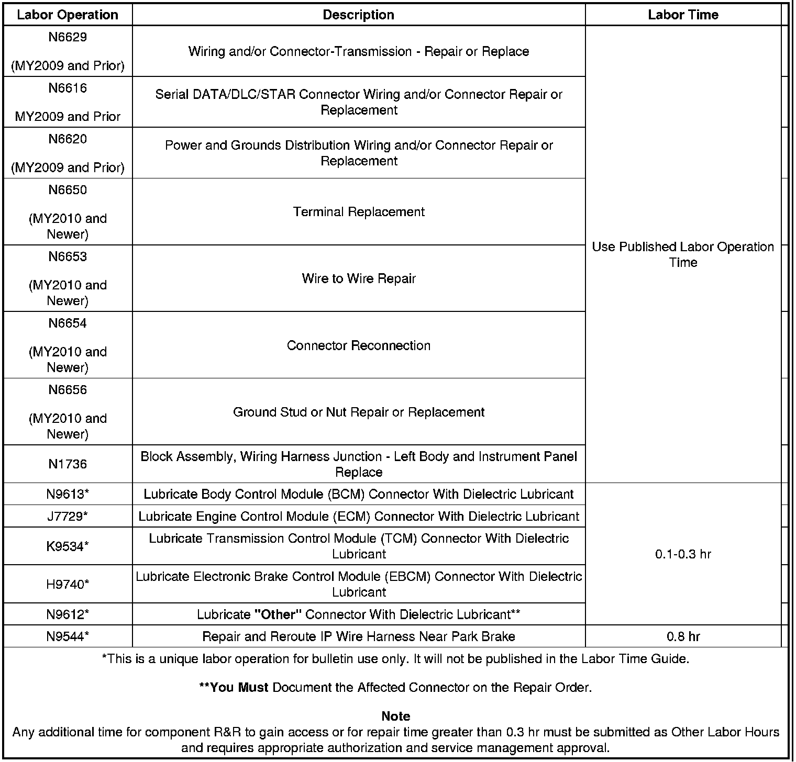

Electrical - Electrical Malfunction/Multiple DTCs: Overview
TECHNICALBulletin No.: 08-07-30-021F
Date: May 26, 2011
Subject: Loss of High Speed GMLAN Communications, Intermittent No Crank, IP Gage Fluctuation, Intermittent Door Lock Cycling, Intermittent Chime Operation, Various IP Warning Lamps Illuminated, Transmission May Not Shift, Communication DTCs U0073, U0100, U0101, U0102, U0109, U0121 or U0140 Set (Repair Terminals in Transmission Harness Connector, Repair Open or Shorted GM High Speed LAN Circuits, Open or Shorted Data Link Resistor, Corrosion or Poor Connections in Various Control Module Connectors)
Models:
2007-2010 Cadillac XLR
2007-2011 Cadillac Escalade Models
2009-2011 Cadillac Escalade Hybrid
2007-2011 Chevrolet Avalanche, Corvette, Silverado, Suburban, Tahoe
2008-2011 Chevrolet Silverado Hybrid, Tahoe Hybrid
2007-2011 GMC Sierra, Yukon Models
2008-2011 GMC Sierra Hybrid, Yukon Hybrid
2008-2009 HUMMER H2
Equipped With Gasoline Engines and 6 Speed Automatic Transmission 6L80 (RPO MYC) or 6L90 (RPO MYD)
Equipped With Hybrid Propulsion (RPO HP2) and Two Mode 2ML70 Automatic Transmission
Please Refer to GWM/IVH
Supercede:
This bulletin is being revised to add the 2011 model year and update the Condition, Cause, Correction, Graphics, Parts and Warranty information. Please discard Corporate Bulletin Number 08-07-30-021E (Section 07 - Transmission/Transaxle).
Condition
Some customers may comment on any of the following conditions:
- The malfunction indicator lamp (MIL) may be illuminated.
- Instrument panel cluster (IPC) warning lamps may illuminate.
- The transmission may not shift or defaults to 2nd gear.
- The door locks may cycle by themselves.
- The engine may not crank intermittently.
- A driver information center (DIC) message may be displayed.
- The IPC gages may fluctuate.
- Applying the brakes may cause the IPC to become erratic and the chimes to operate simultaneously.
Depending on the vehicle and build, technicians may find one or more, but not limited to the following, High Speed GMLAN Communication DTCs set as Current or History:
- P0700: Transmission Control Module (TCM) Requested MIL Illumination.
- U0073: Control Module Communications Bus OFF.
- U0100: Lost Communication With ECM/PCM.
- U0101: Lost Communication With Transmission Control Module (TCM).
- U0102: Lost Communication with Transfer Case Control Module (TCCM).
- U0109: Lost Communication With Fuel Pump Control Module.
- U0121: Lost Communication With ABS Control Module.
- U0140: Lost Communication With Body Control Module (BCM).
- U186B: Lost Communication With TCM.
- U0129 : Lost Communication with Brake System Control Module.
- U186B: Lost Communication with TCM.
- U0293: Lost Communication with HP2 Powertrain Control Module.
- U1862: Battery Energy Control Module Lost Communication with Communications Gateway Module.
- U1886: Battery Energy Control Module Lost Communication with Engine Control Module (ECM).
- U1888: Hybrid Powertrain Control Module Lost Communication With Starter/Generator Control Module.
Cause
These conditions may be caused by, but not limited to, any of the following:
- Chafed, damaged, pinched, open or shorted wiring.
- The terminal(s) for the High Speed GMLAN Serial Data Bus has or have backed out of the 16-way electrical connector to the automatic transmission.
- The terminal position assurance (TPA) lock in the transmission 16-way electrical connector is not fully seated.
- The High Speed GMLAN Serial Data Bus circuits are open or shorted to ground.
- Corrosion in a control module connector.
- Intermittent or poor connections in the inline connectors containing the High Speed GMLAN Serial Data Bus circuits.
- Water intrusion in a control module connector.
Note
Model Year 2007 vehicles.
- The Terminator Resistor is open or shorted.
Note
Model Year 2008 Sierra and Silverado vehicles.
- The Data Link Resistor is open or shorted.
Note
Model Year 2009 and newer Sierra and Silverado vehicles.
- The Data Link Resistor 1 is open or shorted.
Note
Model Year 2008 and newer Avalanche, Escalade, Tahoe, Yukon vehicles.
- The Data Link Resistor 1 is open or shorted.
Note
Model Year 2008 and newer Hybrid RPO HP2 vehicles.
- The Data Link Resistor 2 (RPO HP2) is open or shorted.
Note
The following cause only pertains to hybrid RPO HP2 vehicles equipped with OnStar(R) Delete RPO UE0.
- The High Speed GMLAN jumper harness loop connector that plugs into the bottom rear of the interior driver side junction block, is open or shorted from chafing on the IP brace.
Parts Information
Warranty Information
For transmission electrical repairs please note in the technicians comments field on the repair order which terminal number(s) were repaired or replaced. Also if a male terminal is bent (transmission side of connector), then indicate the bent terminal number on the repair order.

For vehicles repaired under warranty, use the table.

Disclaimer